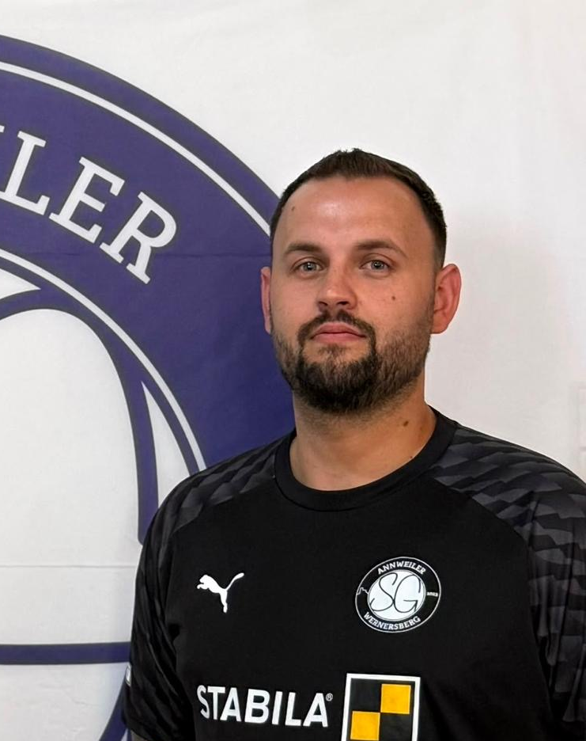

Vorstellung Herren
Vorstellung Herren
Herrenfußball in Annweiler
Willkommen im Herrenteam
Du möchtest gerne Fußball spielen, spielst bereits oder hast Lust dazu? Im Team der 1. Mannschaft bist Du herzlich eingeladen, schau rein und trainiere gerne mit.
Bei uns findest Du ein eingespieltes Team, ehrgeizigen Trainingsbetrieb und einen starken Zusammenhalt sowohl auf als auch neben dem Platz.

Steven GöttgeAnsprechpartner Melanie Leiser
Melanie Leiser